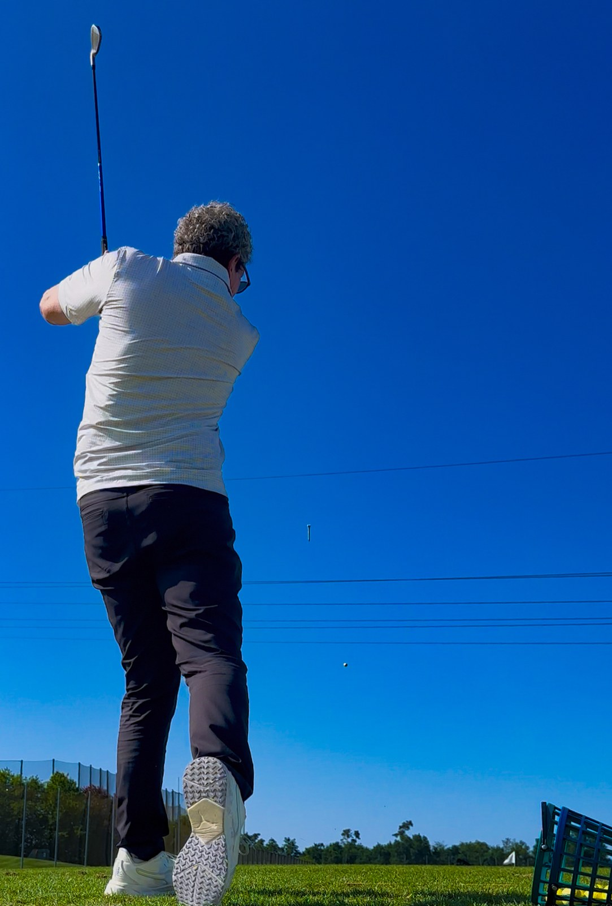
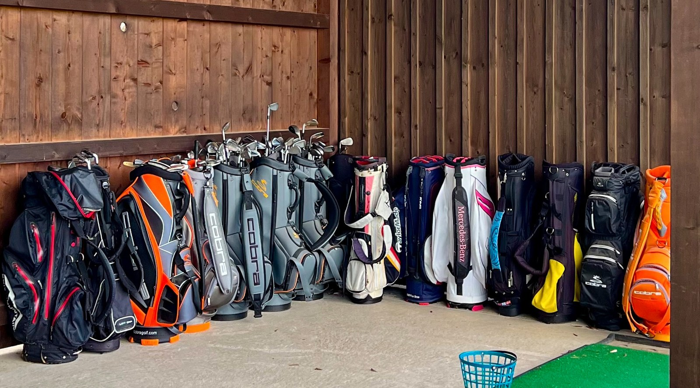
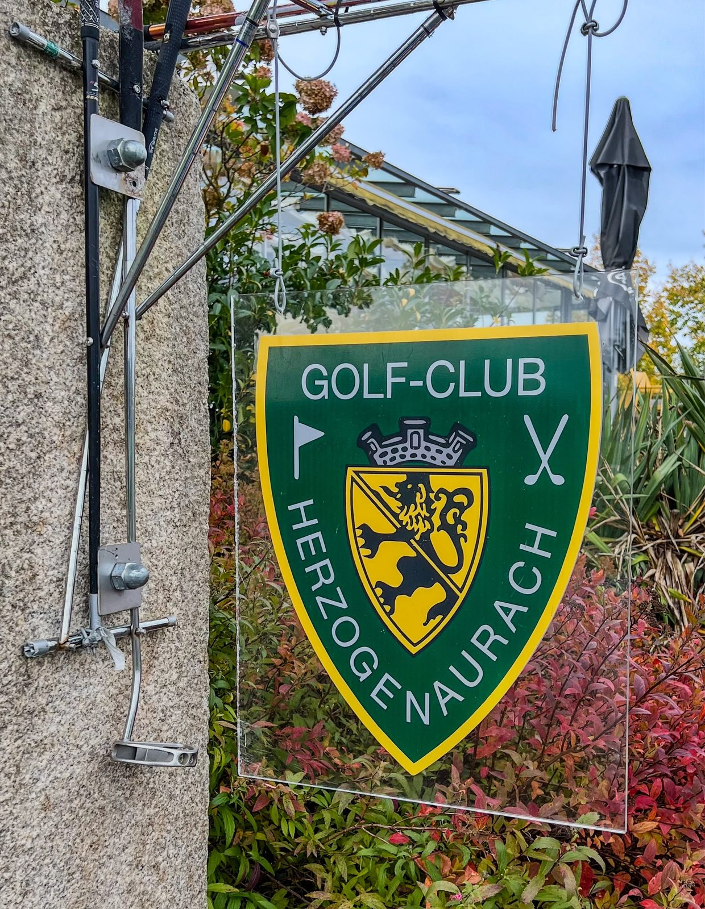
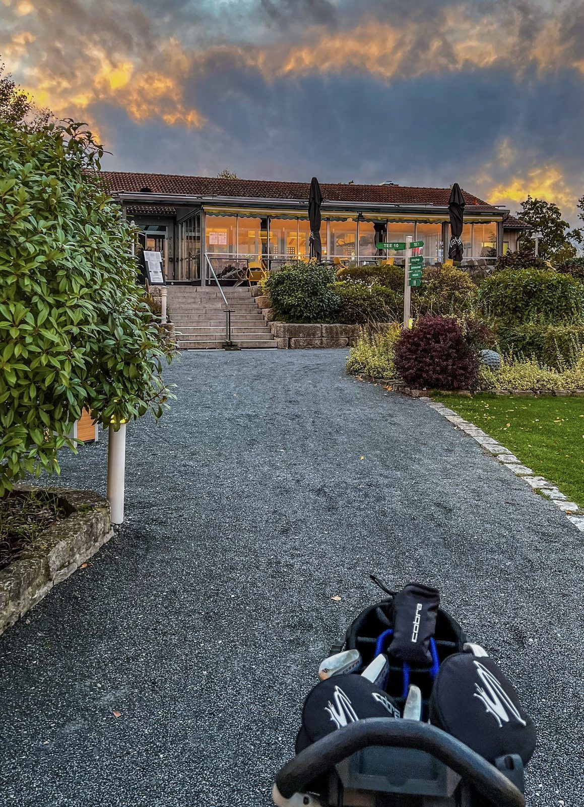
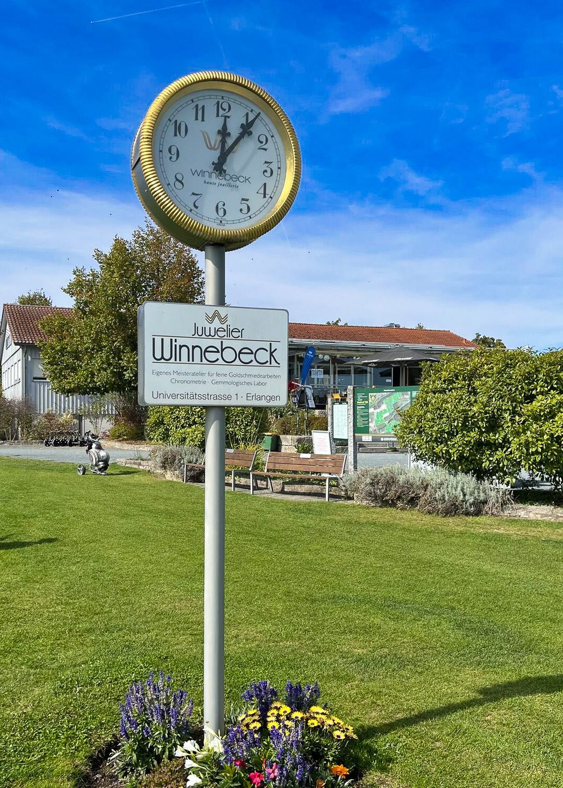
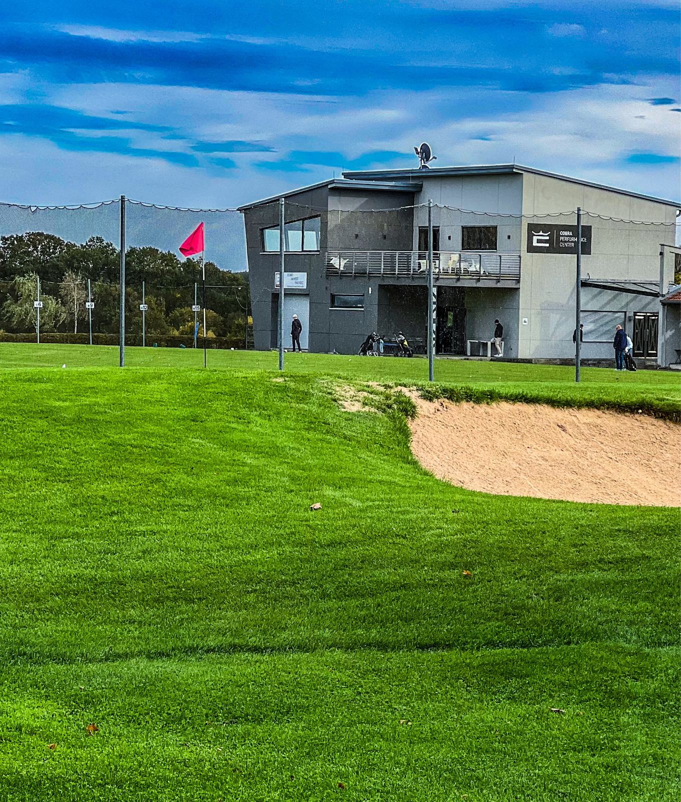
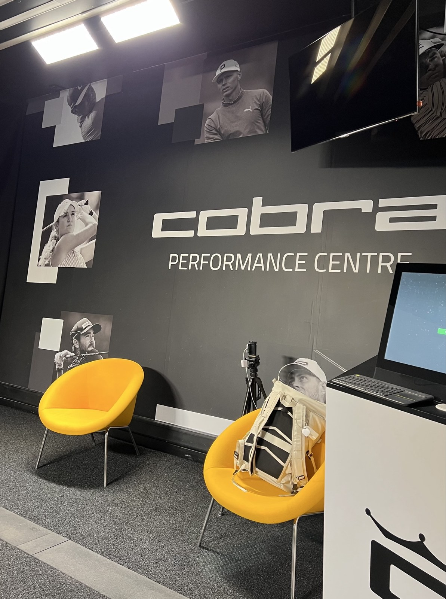
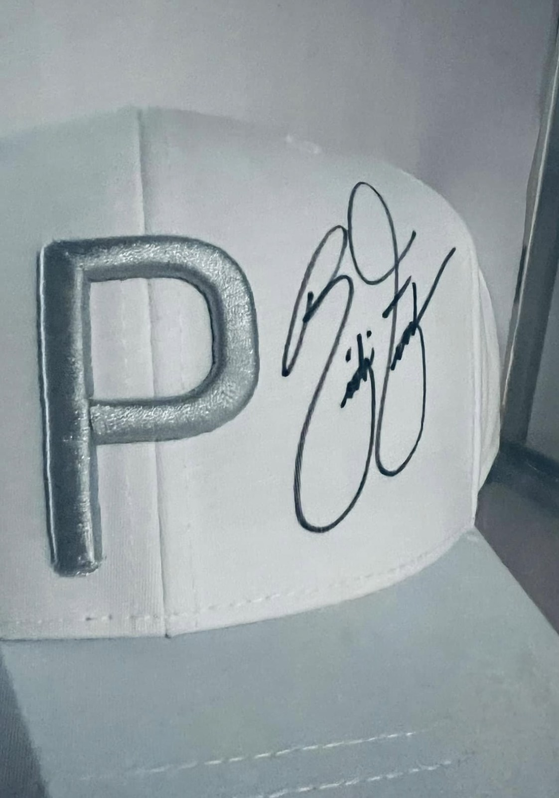
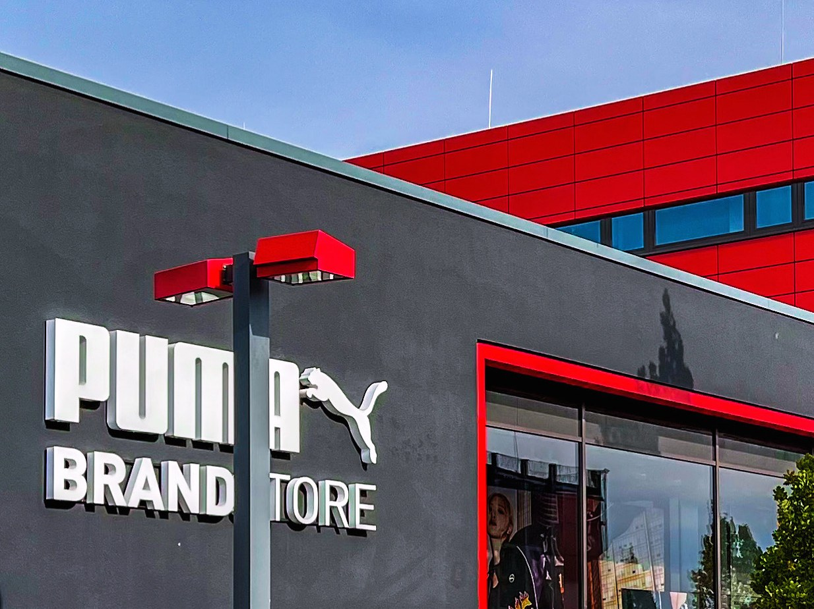
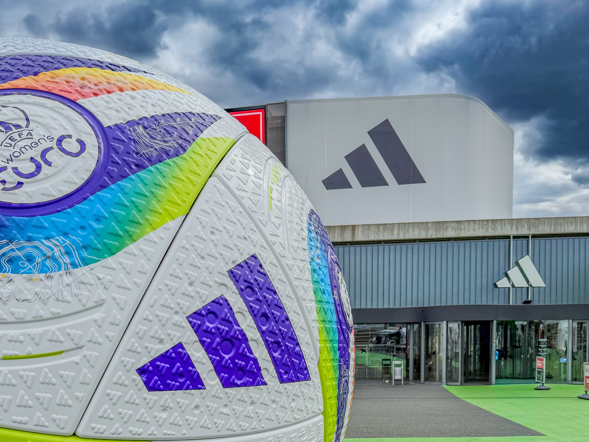

Der erste Ball, den ich hier getroffen habe, flog nicht weit. Er hoppelte ein paar Meter und blieb im Gras liegen. Stewart sagte nichts. Er wartete nur, bis ich den Schläger wieder aufnahm. Genau hier, auf diesem Platz und bei diesem Pro, habe ich Golf gelernt. Bis heute stehe ich hier, wann immer der Kalender es erlaubt, auch mit einem Handicap, über das wir am besten schweigen.
Der Pro und die Grundlagen
Stewart hatte diese trockene Art. Kein großes Lob, kein Drama. Er korrigierte Griff und Stand, stellte sich daneben und ließ mich schlagen. Irgendwann flog der Ball wirklich. Nicht weit, aber sauber. Ich weiß noch, wie leise es plötzlich um mich herum wurde. Nur der Schläger und der Ball. Dann das kurze Geräusch, wenn er den Schlägerkopf verlässt.
Das Team im Club ist so geblieben. Freundlich, geduldig. Auch wenn man den falschen Schläger zieht und so tut, als wäre es Absicht gewesen.

Tipp: Am Anfang reicht eine Schnupperstunde. Mehr braucht man nicht, um zu merken, ob einem der Sport liegt.
Die Golfschule
In der Craig Miller Golfschule steht die Technik neben dem alten Handwerk. Video-Analyse, Flightscope, Computer. Man schlägt, schaut sich den Schwung hinterher an und versteht plötzlich, warum der Ball links oder rechts weggeht. Vier Pros arbeiten hier. Stewart ist einer von ihnen. Die anderen heißen Craig Miller, Martin Hastie, Lukas Exner.
Der Sport selbst hat sich kaum verändert. Schläger schwingen, Ball suchen, durchatmen, von vorne.

Tipp: Die Video-Analyse lohnt sich besonders in den ersten Monaten. Man sieht Dinge, die man selbst nie spüren würde.

Golf-Club Herzogenaurach: Platz und Geschichte
Der Verein wurde am 21. März 1967 gegründet. Elf Leute, Gaststätte Winkelmann, 10 D-Mark Aufnahmegebühr. Gespielt wurde damals auf dem Steel Tree Course, benannt nach den vielen Antennen. Ein 9-Loch-Platz, den amerikanische Soldaten auf einem ehemaligen Wehrmachtsflugplatz angelegt hatten. Heute liegt die Anlage in Burgstall. 18 Löcher, eröffnet 2004. Am alten Clubhaus färbte sich der Himmel über Franken am Abend oft genau richtig. Seit Sommer 2026 ist es abgerissen. Für den Neubau plant der Club die Einweihung im April 2027.


Am ersten Abschlag steht eine Standuhr. Gestiftet vom Juwelier Winnebeck. Goldener Ring, klare Anzeige. Kein Handy, keine App. Man schaut hoch, gleicht die Zeit ab und geht auf die Bahn. Auf der Rückseite wirbt die Sparkasse Erlangen.

Tipp: Den späten Nachmittag auf dem Platz nicht verpassen. Das Licht ist dann am besten.
Die Stadt der gesenkten Blicke
Herzogenaurach ist mehr als der Golfplatz. Die Aurach teilt die Stadt. Auf der einen Seite Adidas, auf der anderen Puma. 1948 zerstritten sich die Brüder Adolf und Rudolf Dassler. Die Fabrik wurde geteilt. Aus der Familienfehde wurde eine Stadtfehde. Man schaute zuerst auf die Schuhe des Gegenübers, bevor man grüßte. Oder eben nicht.
Vor der WM 1954 verhandelte Bundestrainer Sepp Herberger zuerst mit Puma. Dann ging er über die Aurach zu Adidas. Beim Wunder von Bern trug kein deutscher Spieler Puma. Der Wettlauf ging weiter, irgendwann auch auf dem Golfplatz.
TaylorMade, Cobra und eine Kappe
Adidas brachte TaylorMade mit nach Herzogenaurach. Eine Fitting-Station entstand direkt am Club. Später verkaufte Adidas die Marke wieder. Puma antwortete mit Cobra. Das Performance Center steht grau und kantig am Übungsgrün. Im oberen Stock der Academy liegt eine weiße Puma-Kappe mit silbernem P. Darunter die Unterschrift von Rickie Fowler.



Tipp: Das Cobra Performance Center kann man von außen gut sehen. Wer rein will, sollte vorher kurz nachfragen.
Nach der Runde
Puma Brand Store und Adidas Outlet liegen beide an der Herzo Base, dem alten Fliegerhorst, gut einen Kilometer voneinander entfernt. Genau dort hat der Club bis 2003 gespielt. Vom Abschlag sind es Luftlinie drei bis vier Kilometer. Mit dem Bag im Auto stehe ich dann da, beide Logos im Blick, und frage mich, wohin dieses Mal zuerst.


Häufige Fragen zum Golf-Club Herzogenaurach
Wann wurde der Golf-Club Herzogenaurach gegründet?
Am 21. März 1967, von elf Golfbegeisterten in der Gaststätte Winkelmann, Aufnahmegebühr 10 D-Mark. Gespielt wurde anfangs auf dem Steel Tree Course, einem 9-Loch-Platz auf einem ehemaligen Wehrmachtsflugplatz. Die heutige 18-Loch-Anlage im Ortsteil Burgstall eröffnete 2004.
Wo liegt der Golf-Club Herzogenaurach?
Im Ortsteil Burgstall bei Herzogenaurach in Franken, Adresse Burgstall 1, 91074 Herzogenaurach, auf 49.5531° N, 10.8794° O.
Wer unterrichtet an der Craig Miller Golfschule?
Vier Pros. Craig Miller selbst. Martin Hastie. Stewart Kemp, mein eigener Pro. Lukas Exner.
Warum liegen sich Adidas und Puma in Herzogenaurach gegenüber?
1948 zerstritten sich die Brüder Adolf und Rudolf Dassler endgültig. Die gemeinsame Schuhfabrik wurde geteilt. Adolf blieb auf der einen Seite der Aurach und gründete Adidas, Rudolf zog auf die andere Seite und gründete Puma. Seitdem sitzen beide Marken in derselben Stadt.
Quellen & Recherche
Diese Story basiert nicht nur auf eigenen Erinnerungen. Ein paar Fakten habe ich recherchiert und mit folgenden Quellen abgeglichen, Stand November 2026. Die Entfernungen zu Puma und Adidas sind Luftlinie, gemessen an den Koordinaten aus OpenStreetMap. Dass die Standuhr gestiftet wurde, weiß ich aus dem Club, den Abriss des alten Clubhauses im Sommer 2026 und die Sparkasse auf der Rückseite der Uhr kenne ich vom Platz. Schriftliche Quellen dazu habe ich nicht. Wer will, kann selbst nachlesen.
- Historie Golf-Club Herzogenaurach
- Golfschule GC Herzogenaurach
- Craig Miller Golf Academy
- Neubau Clubhaus, GC Herzogenaurach
- Die Stadt der gesenkten Blicke, fluter.de
- Herzo Base, Wikipedia
- Puma Brand Store neben der Zentrale, PUMA
- Rudolf Dassler, Wikipedia
- TaylorMade Ownership Timeline, greenfeed.news
- Puma Acquires Cobra Golf, offizielle Pressemitteilung
- Rickie Fowler Cobra Puma seit 2009, Yahoo Sports
- Koordinaten GC Herzogenaurach, GolfPass